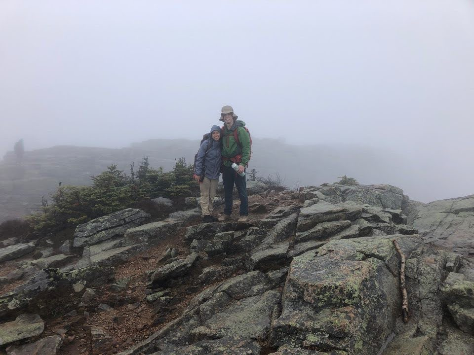

As mentioned in the About Me page, I hiked the Bonds Traverse in October 2020. Originally, my friends and I were going to hike Mt. Katahdin but it wasn't feasible at the time because all the passes to the park were sold out. Instead, we decided to hike 6 peaks, 20 miles, and 3776 ft in one day. I figured, I hike, I run, I figure skate, I can definitely do this.
I was basically jumping out my skin with excitement the day we booked the airbnb up until the day we drove to New Hampshire. I do a lot of cardio so I knew I could handle it, but I was little concerned for my boyfriend and his friend who are fit but are not used to hiking. We drive up from my house at about 4pm and we do not arrive at the trailhead until 11pm. We had to park our car at the end of the trailhead because it was an out and back. That means the trail does not loop back to where you started. We're dog tired and our friends drives us back to the airbnb. We pass out the second we get there only to wake up 5 hours later. My alarm goes off at 4:30am and I my head is all fuzzy. I think to myself, "Get up get up, get up." I brush my teeth, put my contacts on, eat a caffeine bar and crawl out the door with my pack. Let me also note that I am 5 feet tall and my pack is the biggest of the group. My friend is 6'4.
It is still dark out when we get to the trailhead at 5:30am. Ireland, my friend who is a New Hampshire native has hiked all over these parts. She takes the lead and moves at a steady but quick pace. We're all still waking up but the brisk air feels good on my skin and the smell of the wet leaves brings me back to life.
We hit the first peak and the sun was just starting to come up. I was expecting see gorgeous views of rolling hills but unfortunately it was all foggy and cloudy. It was still a sight to see and being in the woods with my friends gave me a feeling of euphoria. We continued on and it was a steady uphill for about 2 or 3 miles. The further we climbed, the denser the clouds became. Not only was I wet from sweat, I was now wet from humidity. We reach the second peak around 9am, the sky is full of clouds and we can't see anything but clouds off the cliff. We're all hopped up on endorphins and are acting like lunatics. We're screaming random things like "ooooo so mushy" because the ground was like soup from the rain and humidty.
We reach the fourth peak and this one was particularly interesting. I felt as though I was on another planet. I walked out of the treetops and I felt like I was on a beach at the top of a mountain. There were no plants, just sand and pebbles. According to Alltrails, the views from this peak are indescribable, but of course, I can't see a foot in front of me. At this point, it is pouring and the wind is nearly knocking me over. I'm soaked the bone and enjoying every second of it. My friends and I are laughing life crazy as we bend over and fight the wind. We finally reach a spot where we can sit and scarve down some protein bars and hydrate with our fifty water bottles.
The final 6 miles of the hike were downhill or nearly flat. At one point, we had no idea how close we were to the end. We look bedraggled with hair sticking up in every direction. We pass a couple thru-hikers. I ask how much further until the parking lot. The teen boy says, "Oh probably 2 miles." Alright, not too bad. He was wrong. It was 4 more miles. We were all dog tired. My feet were exhausted and I just wanted to lay down. We see more people. I see two teen girls, they seem approachable, so I ask again. They look me and boyfriend up and down. They see two people with big packs, sweaty, exhausted, messy hair, covered in dirt. They first look confused then digest what they've just looked at. Their faces soften and they say, "Don't worry, it's only 10 minutes to the parking lot" with a smile. I gave them the biggest grin and thanked them. We walk what feels like 5 hours to the parking lot and rejoice. While it was a laborious 9 mile hike, I would do it just the same all over again. Spending time in nature with my friends regardless of the weather conditions is something I would do anyday of the week.
